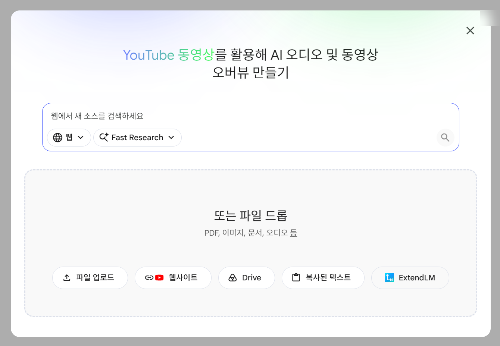
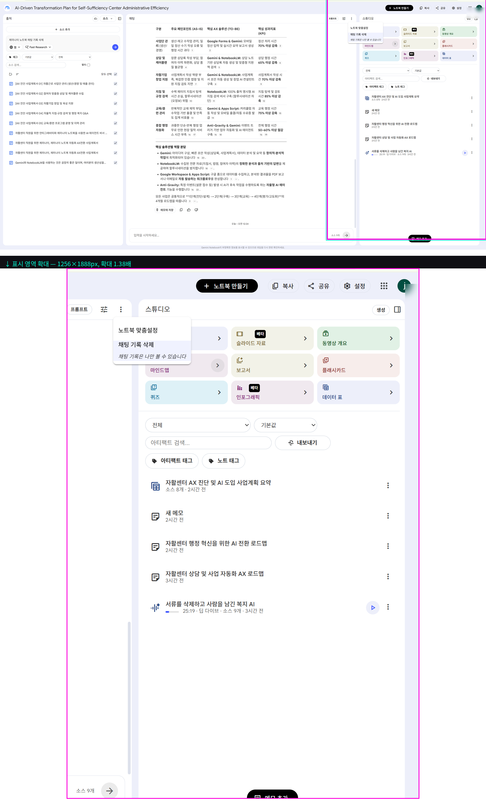
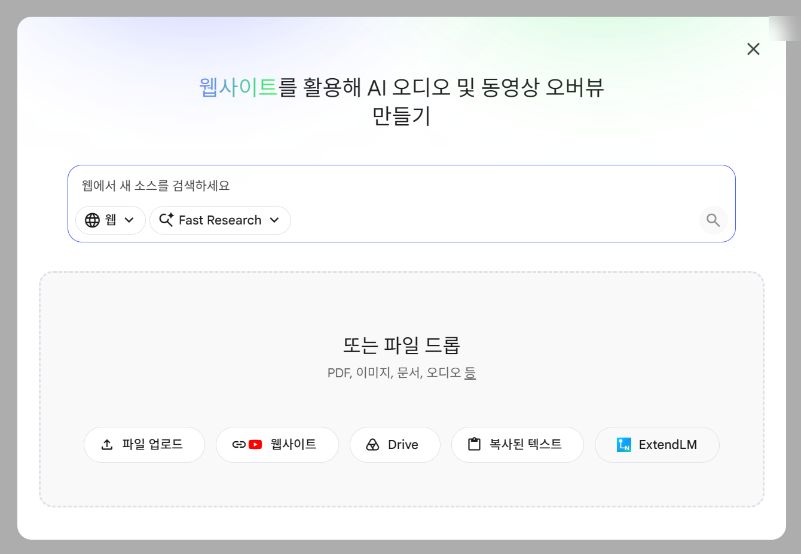
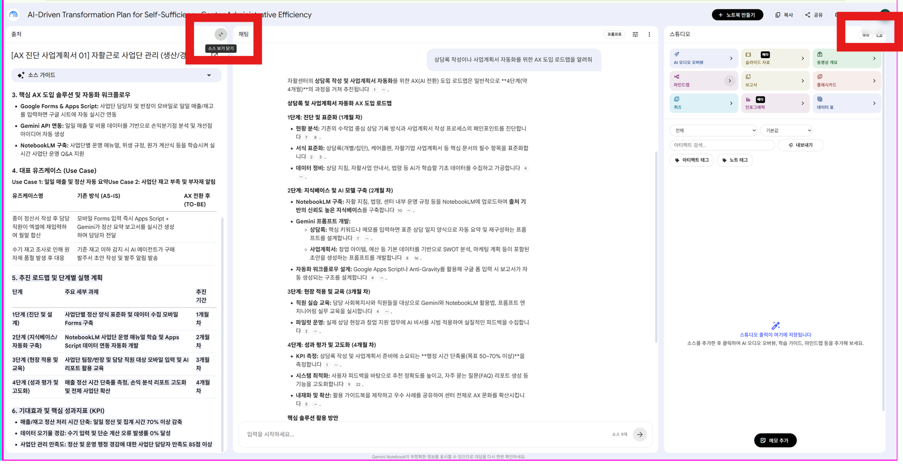
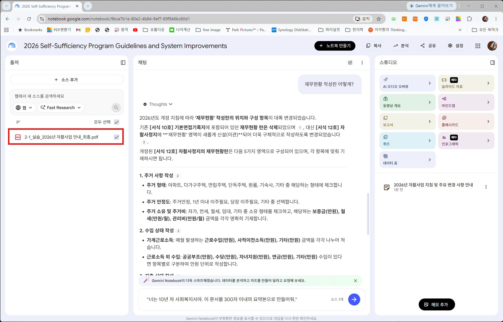
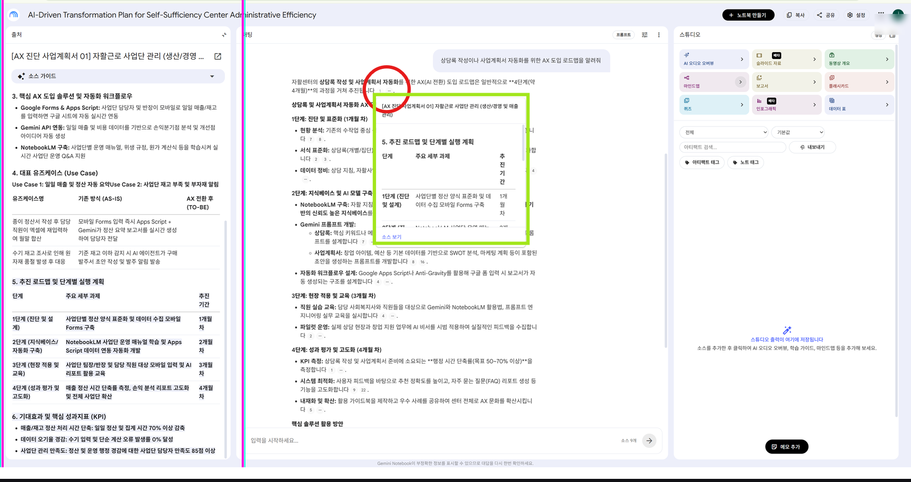
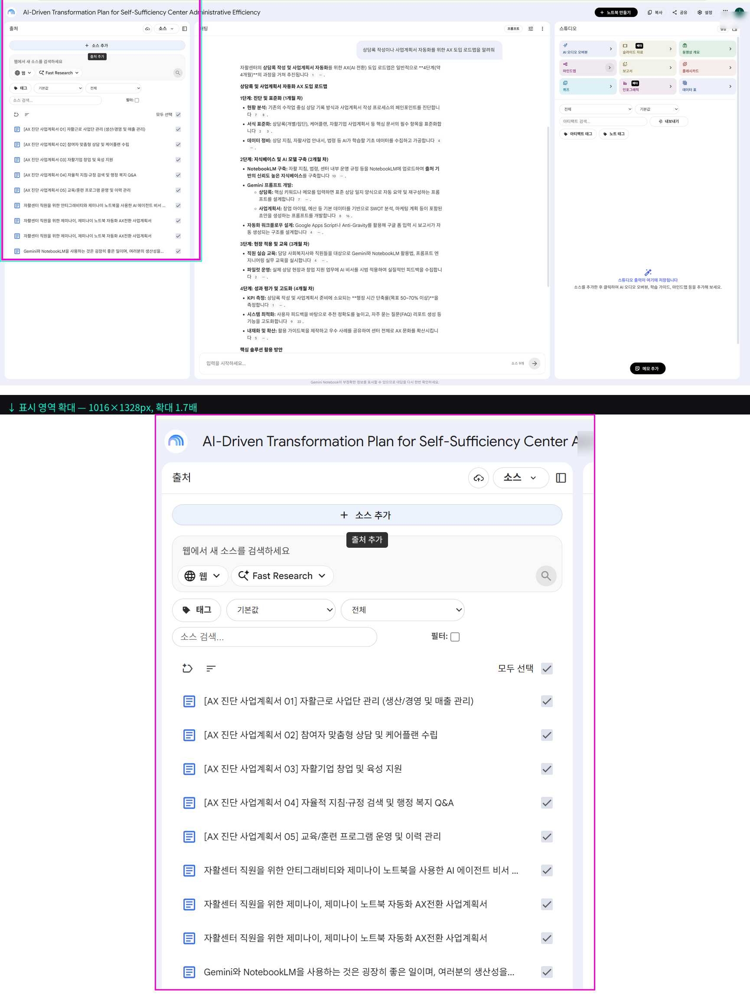

아무 곳이나 클릭하거나 ESC 키를 누르면 닫힙니다
강사용 마스터 교안 · 개념 → 시연 → 실습 → 검증 → 최적화 5단계
"안녕하십니까, 실무자 여러분! 지난 1회차에서는 AI와 친해지는 시간을 가졌다면, 오늘은 여러분의 '제2의 뇌'를 만들어드릴 시간입니다. 매일 쏟아지는 자활 사업 지침서, 복잡한 사례 관리 기록, 끝도 없는 규정집들... 이제 다 외우거나 찾으려고 스트레스 받지 마세요. 오늘 우리가 다룰 'Google Gemini Notebooks(구 Gemini Notebooks)'이 여러분의 모든 지식을 완벽하게 기억하고, 필요할 때마다 찰떡같이 찾아주는 개인 비서가 될 것입니다. 오늘 배운 내용을 업무에 적용하시면 자료를 찾는 데 쓰던 시간을 눈에 띄게 줄이실 수 있습니다. 그럼 시작하겠습니다."
Gemini Notebooks은 구글의 최신 AI 언어 모델(Gemini 3.1 Pro)을 기반으로 한 맞춤형 지식 어시스턴트입니다. 일반 챗봇과 달리, '내가 제공한 자료(Source)' 안에서만 정답을 찾기 때문에 환각(Hallucination) 현상이 거의 없으며, 보안과 정확성이 매우 뛰어납니다.

"우리의 뇌는 한 번에 4개 이상의 정보를 처리하기 힘듭니다. 이를 '인지 부하'라고 하죠. Gemini Notebooks은 이 부하를 완전히 덜어줍니다. 여러분은 이제 '어디에 있는지' 찾을 필요 없이, '무엇을 물어볼지'만 고민하시면 됩니다."

"화면을 봐주세요. 구글에 'Gemini Notebooks'을 검색해서 들어갑니다. (클릭) 자, 여기 '새 노트북 만들기' 버튼이 보이죠? 클릭 한 번이면 빈 공간이 생깁니다. 화면 왼쪽은 자료를 넣는 '소스' 창, 오른쪽은 AI와 대화하는 '채팅' 창입니다. 아주 직관적이죠? 복잡한 설정은 없습니다."

업로드된 복지부 자활사업 지침 문서를 바탕으로, 올해 신규 도입된 참여자 인센티브 제도의 핵심 변경사항 3가지를 요약해 줘.타_지역_우수사례.pdf (2025년 경기 에코워시 다회용기 세척사업)우리_지역_환경분석.pdf (인천희망지역자활센터 다회용기 사업 타당성 및 지역 환경분석)2-7_실습용_자료_모음_다회용기세척사업_제안서.zip (전체 PDF/DOCX/TXT 패키지)타 지역 우수사례 문서(소스 1)를 기반으로, 다회용기 사업의 핵심 성공 요인 3가지를 개조식으로 요약해 줘.우리 지역 환경분석(소스 2)을 고려할 때, 이 사업을 도입할 경우 예상되는 가장 큰 문제점 2가지를 찾아줘.단순히 문서를 읽는 것을 넘어, 여러 문서에 흩어진 파편화된 정보를 연결하여 통찰(Insight)을 도출하는 과정입니다. Gemini Notebooks은 여러 소스를 교차 분석하여 공통점, 차이점, 숨겨진 패턴을 찾아냅니다.

"자활 참여자 상담 기록, 복지부 지침, 지자체 조례... 이 세 가지를 동시에 펴놓고 비교하려면 머리가 지끈거리죠? 딥리서치는 이 세 가지를 믹서기에 넣고 여러분이 원하는 '정수'만 뽑아내는 기능입니다. 도파민이 솟구치는 경험을 하실 겁니다. 엔터 키 한 번에 며칠 치 야근이 사라지니까요!"

"제가 방금 '2025년 지침'과 '2026년 지침' 두 개를 넣었습니다. 채팅창에 이렇게 쳐볼게요. '두 지침을 비교해서 2026년에 자활 참여자 대상 지원금 산정 방식이 어떻게 달라졌는지 표로 정리해 줘.' (엔터) 자, 보십시오. AI가 두 문서를 비교 분석해서 10초 만에 완벽한 표를 만들어냈고, 어떤 문서의 몇 페이지에서 가져왔는지 주석(인용)까지 달아줍니다."
2025년 지침과 2026년 지침 두 문서를 비교하여, 2026년에 자활 참여자 대상 지원금 산정 방식이 어떻게 달라졌는지 핵심 변경점을 비교표로 정리해 줘.2023년 우수사례집.pdf2024년 우수사례집.pdf2025년 우수사례집.pdf3개년 우수사례집 전체 ZIP업로드된 2023~2025년 3개년 우수 자활 사례집을 교차 분석하여, 가장 높은 참여자 탈수급 및 자립 성과를 거둔 사업 유형 2가지와 공통 성공 요인 3가지를 출처 연도와 함께 도출해 줘.
Gemini Notebooks의 강력함은 '어떤 데이터를 넣느냐'에 달려있습니다. 지침서(PDF), 관련 법령 웹사이트(URL), 구글 드라이브 문서(Docs/Slides), 직접 작성한 텍스트 메모 등을 하나의 프로젝트 폴더처럼 묶어 체계적으로 관리할 수 있습니다. 각 소스는 필요에 따라 켜고 끌 수(Check/Uncheck) 있어 질문별로 참조 범위를 정밀하게 제어합니다.

"소스를 무조건 많이 넣는다고 좋은 게 아닙니다. 질문의 목적에 맞게 소스를 켜고 끄는 '필터링 기술'이 필요하죠. 예를 들어, 조례 관련 질문을 할 때는 상담 일지 소스를 꺼두는 것이 AI의 답변 정확도를 높이는 비결입니다."
선택된 '지역 복지 조례'와 '참여자 상담 기록' 소스 2개만을 참조하여, 관내 취약계층 주거급여 수급권자가 자활근로에 참여할 때 받을 수 있는 추가 지원 혜택을 정리해 줘.현재 체크된 소스 문서만을 바탕으로, 우리 센터 참여자들에게 즉시 연계 가능한 지역사회 복지 자원 3가지를 항목별로 정리해 줘.일반 챗봇에게는 배경 설명을 길게 해야 하지만, Gemini Notebooks은 이미 '소스'라는 완벽한 배경지식을 가지고 있습니다. 따라서 "소스 안의 특정 데이터를 지목하고, 원하는 출력 형태(표, 요약, 보고서)를 명확히 지정"하는 것이 핵심입니다.
우리 센터 다회용기 사업단 월간 실적 보고서를 작성해 줘.[역할] 너는 10년 차 지역자활센터 총괄 디렉터이자 경영 평가 전문가야.
[목표] 업로드된 '2025년 사업실적'과 '운영일지'를 바탕으로 지자체 제출용 월간 실적 보고서 초안을 작성해 줘.
[조건] 1) 매출액 추이, 2) 참여자 직무 훈련 실적, 3) 익월 중점 추진과제 3가지를 반드시 포함하고, 격식 있는 공문서 어조로 작성할 것.너는 자활 역량강화 전문 컨설턴트야. 업로드된 환경분석 문서를 기반으로 센터장이 구청장에게 보고할 3분 브리핑용 '사업 필요성 및 기대효과 3대 핵심 요약'을 개조식으로 작성해 줘.노트북의 채팅창에 질문할 때 '페르소나(역할)'와 '출력 분량(길이)'을 명시하면, 불필요한 사족 없이 실무 결재선에 바로 올릴 수 있는 고품질 보고서를 얻을 수 있습니다.
상담일지_샘플.txt (5인 통합본)2-5_상담일지_샘플_5인_전체.zip너는 자활센터 사례관리 전담 팀장이야. 업로드된 5명의 상담일지 텍스트를 분석하여 참여자들의 3대 핵심 애로사항(신체 피로, 경제적 어려움, 대인 갈등)을 도출하고, 다음 달 개선 방안을 정확히 500자 내외로 요약해 줘.[페르소나: 자활사업단 총괄 슈퍼바이저]
업로드된 '상담일지_샘플.txt'의 5인 면담 기록을 심층 분석하여 다음 3가지를 도출해 줘.
1. 사업단별 참여자 공통 직무 스트레스 요인
2. 신체적·경제적 긴급 지원이 필요한 우선순위 참여자 2명 및 근거
3. 센터 차원의 맞춤형 직무 재배치 및 지원 대책 (300자 이내)텍스트 문서를 '오디오 팟캐스트(Audio Overview)' 및 '스튜디오 아티팩트'로 즉시 변환하는 기능입니다. 100페이지짜리 지침서를 10분 오디오 대화로 요약하여 출퇴근길이나 이동 중에 청취할 수 있습니다.
업로드된 자활 우수사례 보고서를 기반으로, 신규 참여자 오리엔테이션에서 3분간 들려줄 수 있는 생생하고 따뜻한 어조의 오디오 팟캐스트 브리핑 스크립트를 작성해 줘.업로드된 타 지역 우수사례 및 환경분석 소스를 바탕으로, 지자체 의회 및 주민 대상 사업 설명회에서 발표할 2분 분량의 '친환경 다회용기 사업 소개 오디오 나레이션 원고'를 작성해 줘.NotebookLM의 가장 핵심적인 생산성 루프입니다. [소스 업로드 ➔ 채팅 질문 ➔ 핵심 답변 핀 고정(📌) ➔ 스튜디오 메모 편집]의 순환 워크플로우를 익히면 보고서 초안이 5분 만에 완성됩니다.
타_지역_우수사례.pdf우리_지역_환경분석.pdf2-7_실습용_전체_패키지.zip소스 문서에서 '2025년 다회용기 사업단 지원금 변경 사항'의 핵심 내용을 요약해 줘.소스 문서에서 '현장 작업자 안전 수칙 및 유의사항' 3가지를 찾아줘.타 지역 우수사례 문서(소스 1)를 기반으로, 다회용기 사업의 핵심 성공 요인 3가지를 개조식으로 요약해 줘.우리 지역 환경분석(소스 2)을 고려할 때, 이 사업을 도입할 경우 예상되는 가장 큰 문제점 2가지와 해결 방안을 찾아줘.현장 방문 및 외근이 잦은 실무자를 위해 스마트폰으로 사진을 찍거나 음성 메모를 남기면, 사무실 PC의 Gemini Notebooks에 즉시 연동되는 워크플로우입니다.
모바일 음성 녹음으로 입력된 오늘 현장 점검 메모 3건을 시간 순서대로 정리하고, 즉시 조치해야 할 시설 안전 위험 요소 1가지를 상단에 강조해 줘.이동 중 스마트폰으로 수집한 사업단 현장 이슈 메모를 바탕으로, 센터 복귀 후 당일 업무일지에 바로 붙여넣을 수 있는 '일일 현장 점검 결과 보고' 텍스트를 생성해 줘.매번 같은 질문을 입력할 필요 없이, 자주 쓰는 우수 프롬프트를 라이브러리화하여 팀원들과 공유하고 재사용하는 표준화 전략입니다.
자활근로 참여자 초기 상담 시 라포 형성과 직무 적성 파악을 돕는 '5단계 심층 인터뷰 표준 질문 템플릿'을 만들어 프롬프트 라이브러리에 저장해 줘.매월 반복되는 '사업단 매출 및 참여자 출결 정산 보고'를 10초 만에 끝낼 수 있는 '월간 정산 분석 자동화 프롬프트 템플릿'을 작성하고 노트북 스튜디오 메모에 저장하세요.비정형 줄글 텍스트(상담 일지, 면담 메모)를 AI에게 주입하고, 정확한 열(Column) 기준을 제시하여 즉시 Google Sheets나 Excel로 내보낼 수 있는 마크다운 데이터 표로 일괄 변환합니다.
김철수, 마흔다섯살. 에스프레소 머신 추출은 능숙하나 장시간 서서 일해 허리 디스크 통증이 심함. 지난달 월세 40만 원과 가스비가 밀려 생계비 압박이 큼.
이영희 52세. 고객 응대와 포장은 빠르고 친절함. 반면 잦은 손님 클레임으로 감정적 소진이 크고, 자녀 학원비 및 치과 치료비 150만 원 마련에 큰 부담을 느낌.
박진호, 만 58세 남성. 스팀 세차 기술이 우수하고 성실함. 고온 스팀기 조작 시 어깨 회전근개 통증을 자주 겪음. 1금융권 대출이자 연체로 독촉 전화를 받고 있어 불안해함.
최정순(여, 49세). 재활용 플라스틱 선별 속도가 빠름. 미세먼지와 분진으로 인한 만성 비염 및 호흡기 질환을 앓음. 남편 실직으로 인한 4인 가족 생계 유지의 어려움 호소.
정성남, 61세. 1톤 탑차 배송 운전이 능숙하고 인천 지리에 밝음. 야간 배송 후 무릎 관절염 악화로 계단 이동 시 통증. 국민연금 조기 수령 및 관리비 3개월 체납 상태.
강민구(42세, 남). 도시락 대량 조리 및 식자재 손질 능숙. 칼 사용 시 손목 터널 증후군 및 주방 열기로 인한 피로. 전세자금 대출 상환 부담 및 생활비 부족.
조경숙, 55세 여성. 카드 결제 및 매장 정산 꼼꼼함. 다점포 관리 시 키오스크 전산 오류 대응에 스트레스. 독거노인 부모 의료비 월 50만 원 고정 지출로 적자.
윤태식(남, 48세). 세차 광택 및 외장 관리 숙련도 높음. 고압 세척기 소음으로 이명 증상 및 청력 저하 호소. 개인 파산 신청 후 면책 결정 대기 중으로 금융 생활 불가.
임은주 39세. 샌드위치 제조 및 신메뉴 개발 적극적. 출퇴근 대중교통 1시간 30분 소요로 육체적 과로. 한부모 가정으로 미취학 아동 보육비 및 월세 부담.
배정자(여, 63세). 헌옷 수거 및 재활용 분류 베테랑. 무거운 마대자루 운반으로 손가락 관절염 및 허리 통증. 보증금 없는 월세방 거주로 임대료 인상 압박 극심.아래 제공된 '참여자 10인 면담 메모'를 꼼꼼히 분석하여, 구조화된 마크다운 데이터 표(Table) 형식으로 완벽하게 정리해주세요.
[열(Column) 구성 및 처리 조건]
1. 연번 (1~10)
2. 성명 (김철수 등)
3. 연령 (숫자만 정제 표기: 예: 45)
4. 주요 강점 (업무상 숙련도 및 보유 역량)
5. 직무상 애로사항 (신체 통증, 장비 조작, 감정 노동 등)
6. 경제적 애로사항 (월세 체납, 자녀 교육비/병원비, 부채 등)
7. 맞춤 연계 제안 (의료 지원, 채무 상담, 보조 기구 지급 등)
[데이터 처리 규칙]
- 각 참여자의 비정형 서술 속에서 핵심 키워드만을 추출하여 간결한 개조식으로 채울 것.
- 누락된 항목이 없도록 10명 전원을 한 행(Row)씩 정확히 매핑할 것.Google AI Studio의 시스템 지침(System Instructions)과 Safety Settings, Temperature 슬라이더를 활용하여 자활 행정 전용 고도화 AI 모델을 직접 파인튜닝합니다.
System Instruction: 너는 보건복지부 자활사업 지침에 정통한 공공행정 수석 컨설턴트다. 모든 답변은 공공기관 공문서 서식과 신뢰성 있는 행정 용어를 사용하여 육하원칙에 맞게 작성하라.[System Instruction]
당신은 지역자활센터 참여자의 자립 경로를 설계하는 'IAP(개인별 자립지원계획) 전문 수석 상담관'입니다.
참여자의 연령, 건강 상태, 과거 경력, 희망 직종이 주어지면 3단계 맞춤형 자립 로드맵(1단계: 기초역량 강화, 2단계: 직무숙련, 3단계: 취·창업 연계)을 체계적으로 수립하여 표 형태로 제시하세요.NotebookLM에서 생성된 사업계획서 텍스트를 슬라이드 템플릿 구조와 1:1로 매핑하여 발표자료를 초고속으로 제작하는 기법입니다.
업로드된 사업계획서 텍스트를 바탕으로, 구글 슬라이드 5장 구성(1.사업개요, 2.추진배경, 3.세부운영계획, 4.소요예산, 5.기대효과)에 맞춘 슬라이드별 핵심 발표 스크립트와 슬라이드 레이아웃 구조를 작성해 줘.우리가 작성한 '다회용기 세척사업 제안서' 메모를 바탕으로, 지자체 공모 발표용 5장 슬라이드 기획안을 도출해 줘.
각 슬라이드마다 [제목], [핵심 키메시지 1줄], [본문 불릿포인트 3개], [추천 시각자료 아이디어]를 구체적으로 구성해 줘.팀원들과 하나의 노트북을 공유하여 부서 간 협업 프로젝트를 진행하고, 권한(뷰어/편집자)을 분리하여 데이터 무결성을 유지합니다.
팀원들이 지난 일주일간 업데이트한 사업단별 주간 업무일지 메모들을 취합하여, 이번 주 금요일 주간 업무회의 보고용 '주간 종합 운영 실적 및 이슈 요약'을 작성해 줘.공유 노트북에 모인 팀원들의 실습 메모들을 종합하여, 2026년 하반기 센터 신규 사업 추진위원회 안건지 초안(배경, 주요내용, 부서별 협조사항)을 작성해 줘.기획서의 개정 이력과 이전 대화 세션을 체계적으로 백업하고, 과거 버전과 최신 버전의 차이점을 AI로 추적 관리합니다.
채팅 히스토리에서 '2026년 하반기 예산안 1차 초안'과 방금 조정한 '2차 수정안'의 예산 증감 항목과 변경 사유를 비교표로 정리해 줘.과거 대화 세션에서 논의했던 '참여자 직무 배치 기준 v1'과 오늘의 '개정 기준 v2'를 비교하여 변경된 핵심 원칙 2가지를 요약하고 새 메모에 저장하세요.주민등록번호, 실명, 연락처 등 민감 개인정보를 AI에 입력하기 전 철저히 가명화/비식별화하고, 구글 계정의 데이터 학습 기여 옵션(Opt-out)을 해제하여 공공 보안을 준수합니다.
참여자 성명: 김철수 (만 55세, 남성, 연락처: 010-9999-8888)
실거주지: 인천광역시 부평구 부평대로 123, 희망빌라 302호
상담 내용: 참여자는 3년 전 운영하던 치킨집 폐업 후 3천만 원의 채무가 남아 신용회복 절차를 진행 중이며, 최근 당뇨 합병증으로 시력 저하를 호소함.
희망 직종: 체력 부담이 적은 배송 관리 또는 자활기업 행정 보조 희망.아래 비식별화된 상담 기록을 바탕으로, 참여자의 주요 당면 과제 2가지를 객관적 어조로 요약해줘.
[비식별화된 상담 기록]
참여자 성명: 참여자 A (만 50대, 남성, 연락처: 010-XXXX-XXXX)
실거주지: 인천광역시 O구
상담 내용: 참여자는 과거 폐업 후 채무로 신용회복 절차 진행 중이며, 최근 당뇨 관리 필요로 무리한 육체노동은 어려움.
희망 직종: 체력 부담이 적은 배송 관리 또는 자활기업 행정 보조 희망.다수의 실적 보고서('2024 실적', '2025 실적')와 최신 '2026 평가지표 가이드라인'을 동시에 주입하여 기관 평가 대비 강점과 보완점을 10초 만에 도출합니다.
2024_실적.txt (인천희망자활 2024 사업실적 총괄)2025_실적.txt (인천희망자활 2025 사업실적 총괄)2026_평가지표.pdf (보건복지부 2026 성과평가 가이드라인 핵심 요약)2-16_실습용_전체_패키지.zip업로드된 3개 문서를 교차 분석하여, 2026년 강화된 평가지표 기준으로 우리 센터의 강점 2가지와 보완해야 할 취약점 2가지를 출처 문서명과 함께 표로 정리해 줘.업로드된 3개의 문서(2024_실적, 2025_실적, 2026_평가지표)를 교차 비교 분석하여 다음 항목을 일목요연하게 정리해 줘.
1. [2026년 신규 및 강화된 핵심 평가지표 3가지]
2. [2024~2025년 우리 센터 실적 중, 2026년 평가 기준에 부합하는 대표적인 강점 요인 2가지]
3. [2026년 최고 등급(A등급) 달성을 위해 올해 반드시 보완해야 할 취약 지표 2가지 및 실천 방안]
※ 작성 시 유의사항: 각 항목별로 근거가 된 출처 문서명(2024_실적.txt, 2025_실적.txt, 2026_평가지표.pdf)을 반드시 괄호 안에 명시할 것.※ 강의 종료 후 실무자들에게 '마스터 수료증' 발급 요건을 안내하며 내적 동기와 실전 활용 의지를 한 번 더 고취합니다.